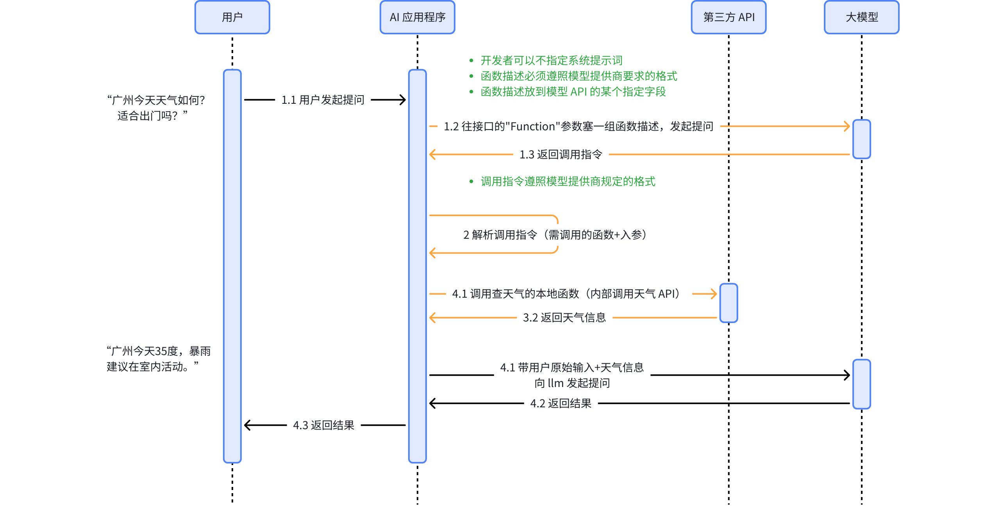

Function Calling 的完整运行机制
正在读取本章记录下次复习：—
请通过“启动学习站.cmd”进入，才能写入数据库。

3.1 第一次模型调用
应用向模型提供：
- 用户消息；
- system/developer 指令；
- 可用工具定义；
- 每个工具的输入 schema。
现代工具定义通常可抽象成：
{
"type": "function",
"name": "get_weather",
"description": "查询指定城市和日期的天气",
"parameters": {
"type": "object",
"properties": {
"city": {
"type": "string",
"description": "城市名称"
},
"date": {
"type": "string",
"format": "date",
"description": "ISO 8601 日期"
}
},
"required": ["city", "date"],
"additionalProperties": false
}
}
3.2 模型返回调用请求
模型可能直接回答，也可能返回一个或多个工具调用：
{
"id": "call_01",
"name": "get_weather",
"arguments": {
"city": "广州",
"date": "2026-07-18"
}
}
这里的 id 用于把执行结果与原调用对应起来。并行调用多个工具时，这一点尤其重要。
3.3 应用执行前校验
应用至少应检查：
- 工具名是否在白名单；
- 参数是否通过 schema；
- 日期、金额、文件路径等是否满足业务约束；
- 当前用户是否有权限；
- 写操作是否需要人工确认；
- 是否超过调用次数、超时或费用预算。
3.4 执行并回传结果
应用调用真正的天气 API，再把结果以工具消息交回模型：
{
"tool_call_id": "call_01",
"content": {
"city": "广州",
"date": "2026-07-18",
"temperature_c": 34,
"condition": "雷阵雨"
}
}
模型根据用户原问题和工具结果生成最终自然语言回答。
3.5 这其实是一个循环
模型调用 → 是否请求工具？
├─ 否：返回最终答案
└─ 是：校验并执行工具 → 回传结果 → 再次调用模型
Agent 就是在这个循环上增加状态、停止条件、重试、审批和可观测性。